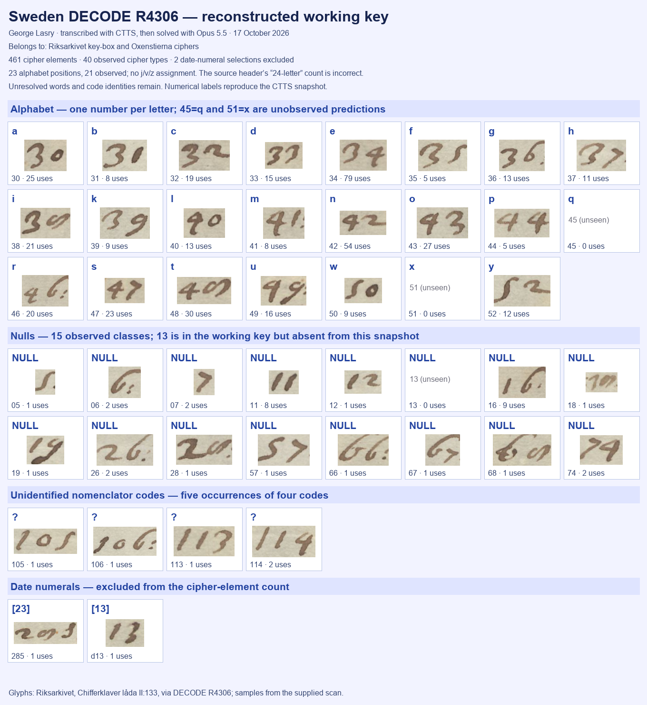

At a glanceCiphertext-only recovery · partial
- Belongs to
- Riksarkivet key-box and Oxenstierna ciphers.
- The letter
- Unidentified Dutch-language correspondent reporting on passports and envoys; year and correspondents unproved. A pencilled “1632?” is visible on the scan.
- Where
- Riksarkivet, Stockholm, Chifferklaver låda II:133; DECODE R4306. This contribution covers one cipher page, not all three record attachments.
- The cipher
- 461 cipher elements: alphabetical number substitution with 34 null occurrences and five occurrences of four unresolved codes. Two date-numeral selections are counted separately.
- How it was solved
- Transcribed with CTTS, then solved with Opus 5.5. No historical decipherment or matched archive key used.
- Credit
- George Lasry directed the work and supplied the CTTS material, edited Dutch text, English translation and context. Codex checked the inventory and five-line excerpt and prepared this contribution.
- Still open
- 105, 106, 113 and 114; doubtful words and the last sentence; year, sender, recipient and location.
01 Cryptanalysis and visual key
No interlinear or marginal decipherment is visible on the supplied page. The key is a monoalphabetic substitution with nulls and an unresolved nomenclator. Values 30–52 form a 23-position alphabet: 21 occur, while 45=q and 51=x are predictions. There is one value per letter, with no homophones. Fifteen null classes occur; null 13 is listed but unobserved. The source key’s “24-letter” header is a counting error.
The 35 CTTS rows contain 463 selections: 422 letter occurrences, 34 nulls, five unresolved-code occurrences, and two date numerals. Thus there are 461 cipher elements and 40 observed cipher types. The CTTS date labels 285 and d13 represent 23 and 13; they are excluded from the cipher count. Assignment coverage is 422/427 non-null cipher occurrences (98.83%), which does not establish semantic accuracy.

02 Supplied edited Dutch reading and translation
The following two texts are preserved as supplied, including their uncertainty marks. The Dutch is an edited, normalized reading, and the English includes interpretive expansions.
Decrypted text (edited, normalized)
Translation
Contributor’s translation notes
- U.L.: Uwe Liefde, explained by the contributor as a conventional address, roughly “Your Honour” or “dear Sir”.
- gade gegeven: interpreted as “kept watch on” or “observed”.
- Codes: 106, 114 and 105 suggest rulers, states or persons; “114 105 gesanten” and movement to 114 may point to a sovereign or court. These are contextual possibilities, not identified key values. Code 113 is also unresolved.
- Last sentence: “Blyf ic noch wat” is the contributor’s least certain reading.
03 Five lines of mechanical decryption
Exactly CTTS/manuscript lines 1–5: 73 selections, yielding 62 literal letters. Nulls omitted; no word spacing, u/v normalization, letter substitutions or repairs.
alleswtdenuw enuerstaenicsal mondelingekll menantwoorden alsodesaecken
Lines 3–4 retain the literal ekll / men; the supplied edition instead marks [gekl…men?]. Line 5 is alsodesaecken, so the restored wording “Als o[o]c des saecken” is not exact mechanical output. This short excerpt is below the statistical validator’s 80-letter threshold; it does not establish full-text accuracy.
04 Historical context and research
Contributor’s interpretation: the writer appears to be an agent or informant reporting to a superior. Passports, rivalry between envoys and their departure fit diplomatic activity, possibly a congress or mediation. The Swedish collection suggests a possible Swedish connection, and the references to 23 February and 13 March suggest writing later than the cited March letter. Late March or April is a working suggestion, not a recovered date.
What was checked: the public DECODE record gives only the broad range 1600–1699, leaves the correspondents and languages blank, and still carries an unresolved catalogue status. Its general collection note concerns Oxenstierna correspondence, not an attribution of this specific letter. The supplied scan visibly carries a pencilled “1632?”. Neither this annotation nor archive custody proves the year or recipient. The earlier survey reports an Amsterdam address on another view; that view was not independently inspected here.
The earlier group survey records unsuccessful attacks on R4306 and tests of keys R4296/R4310. No complete earlier plaintext was located in a limited opening-phrase search. No exhaustive publication search or first-publication claim is made. The identities of the four codes and the correspondents remain open.
05 Method, verification and remaining gaps
The contributor confirms the workflow: CTTS transcription, then Opus 5.5 solution. The supplied key describes crib dragging and an ordered number alphabet. Codex’s digit-box merging preceded the final snapshot; the source key records subsequent corrections. The CTTS position-label histogram matches all 463 transcription selections exactly. The five-line excerpt was recomputed directly from the submitted key and checked against the image.
The full edited reading remains distinct from mechanical output. Four codes, doubtful words, the final sentence, historical identities and dating remain unresolved. No new code identities or a full mechanical decryption are supplied.
06 Sources and credit
- George Lasry’s supplied CTTS material, edited text, translation and context, 17 October 2026. Transcribed with CTTS, then solved with Opus 5.5.
- DECODE R4306, Riksarkivet, Chifferklaver låda II:133.
- Earlier survey notes, 21 September 2026, retained as dated project history.
The repository folder contains the original supplied reading and translation, complete contributor context, key and transcription, visual key, counts and reproducible five-line check.